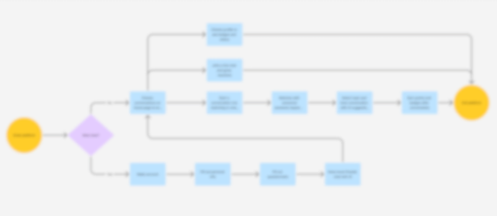
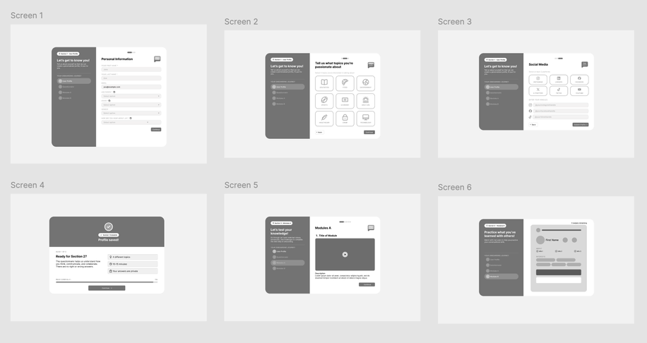
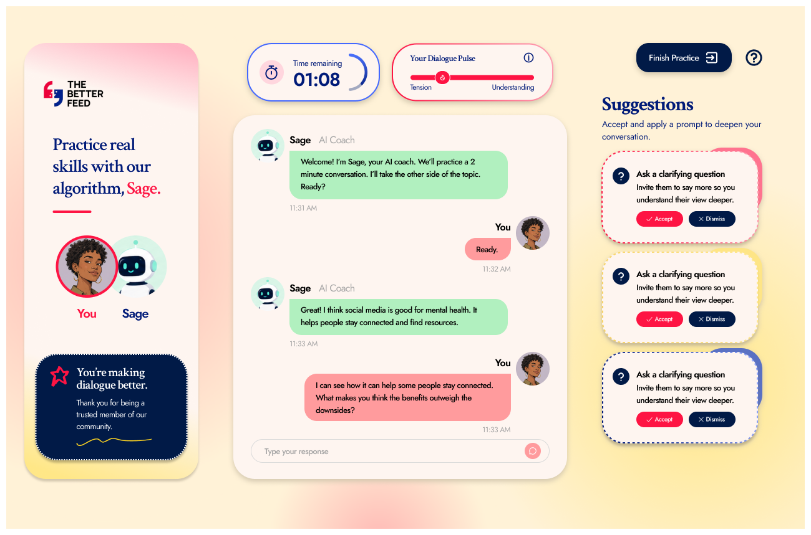

Common Strengths
- Strong content discovery
- Personalized recommendations
- Low-friction user matching
- Interest-based communities
- High user engagement
Problem
Social platforms are designed to maximize engagement, not understanding, which makes it difficult for people with different viewpoints to connect, learn from one another, and find common ground.
Founder
3 Engineers
Lead UI/UX Designer,
Advisory Board Member
Feb 2026 - Current
Project Dialogue is an early-stage startup building a social platform that encourages constructive conversations through intentional algorithm design, dialogue literacy, user well-being controls, and AI-assisted communication tools.
** Confidentiality Notice: Project Dialogue is a pseudonym for a pre-launch startup. Due to confidentiality agreements and the product's ongoing development, certain details, designs, and features have been omitted or generalized in this case study.
Design a 0-to-1 social platform that fosters more constructive conversations across differing perspectives, using branding, user journeys, wireframes, a scalable design system, and high-fidelity prototypes to translate the product vision into a launch-ready experience.
UX Strategy • Branding • Competitive Analysis • User Journey Mapping • Wireframing • Low and High-Fidelity Mockups • Design Systems • Stakeholder Collaboration
Research
Before designing the platform, I conducted a competitive analysis of social media and dating apps to understand how users are matched with others, identify successful engagement patterns, and find opportunities for more meaningful cross-perspective interactions. Here are my key findings:
I explored research and data to confirm the patterns I was seeing in existing platforms and understand whether they actually lead to real negative effects.
of content shown on Facebook is from like-minded sources
of Americans report avoiding conversations with people who hold different political views.
of people have experienced or witnessed harassment on social media platforms.
Ideation
After discussing with the founder on product goals, we had three key priorities in mind:
Encourage healthy engagement, not endless scrolling.
Teach empathy, active listening, and productive disagreement will carry into careers, classrooms, communities, and personal relationships.
Create opportunities for understanding and genuine connection across different perspectives.
I then started working on a user flow to map the end-to-end experience and communicate our vision to the engineering team.

Because Project Dialogue is built around connecting users with people who hold different perspectives, we initially wanted onboarding to teach our core values and gather detailed user insights through:

However, we realized that requiring so much effort before users could experience the platform's value would likely increase drop-off and reduce engagement.
How might we introduce users to a completely new conversation platform and its unique interaction model without overwhelming them with lengthy explanations?
To streamline the onboarding experience, we reduced onboarding time by 50% by:

Our Solution
Project Dialogue combines guided conversations, AI-powered coaching, and educational resources to help users engage more constructively with people who hold different perspectives.
Live, personalized feedback helps users practice healthy debate, active listening, and finding common ground.
Detailed profiles provide users with feedback on their communication style, strengths, and areas for growth.
An on-demand learning hub offers stories, lessons, and exercises designed to strengthen conversation skills.
Our goal is to help users build habits that extend beyond the platform—enabling more thoughtful conversations with family, friends, colleagues, and their broader communities.
Next Steps
Conclusion
There's still plenty of work ahead, but over the past several months we've spent countless hours brainstorming, iterating, and refining our core features. Through the process, I've learned a great deal about taking ownership of a product, adapting when ideas don't work out as expected, and making thoughtful design decisions under tight deadlines.
back to top ↑